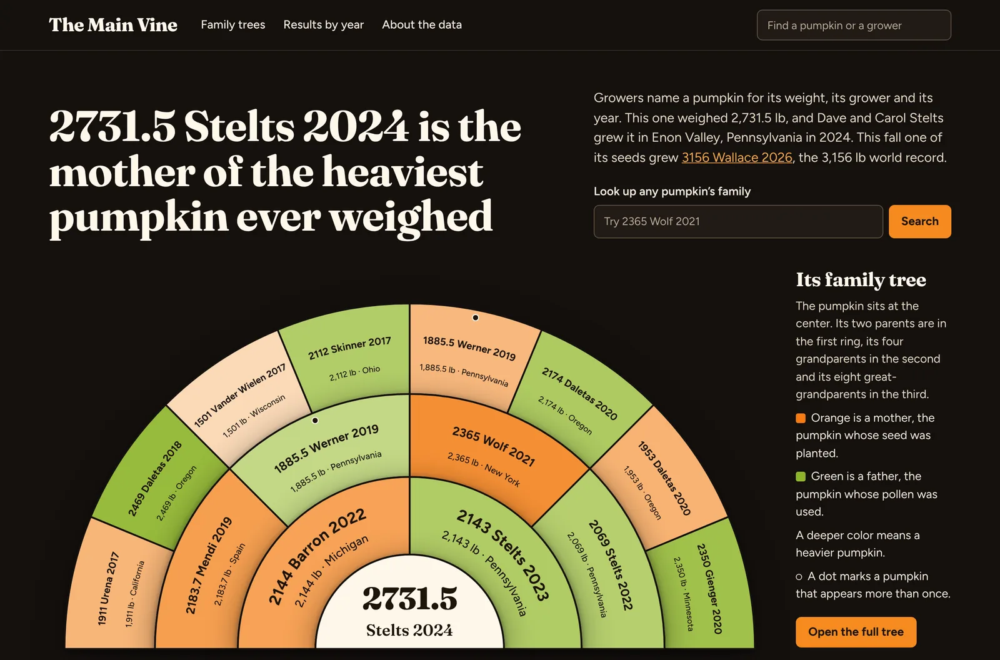
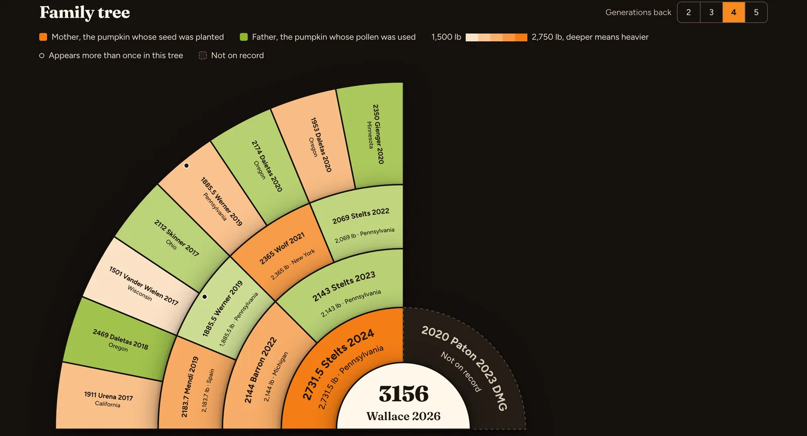
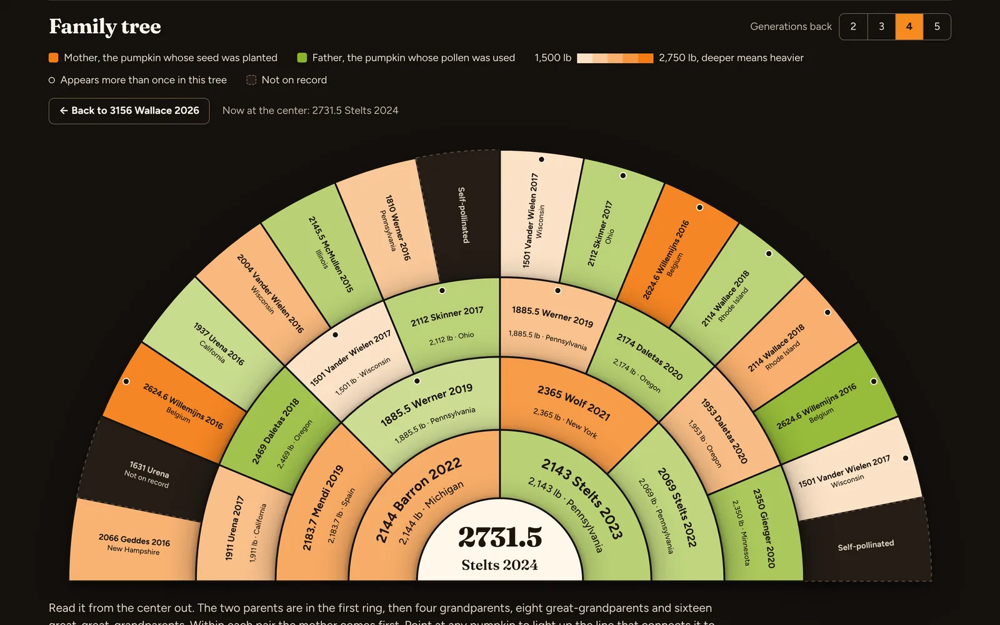
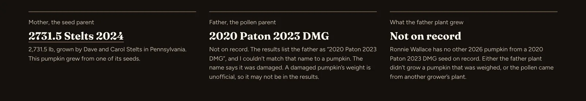
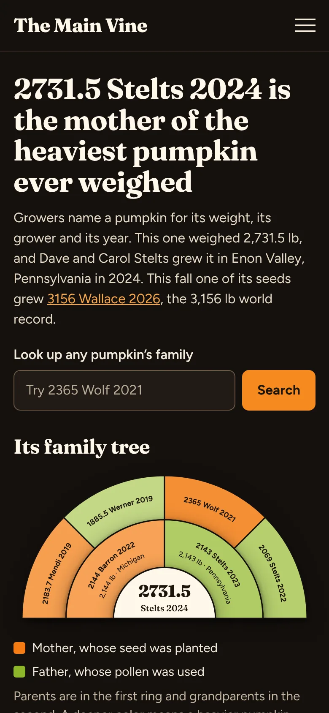
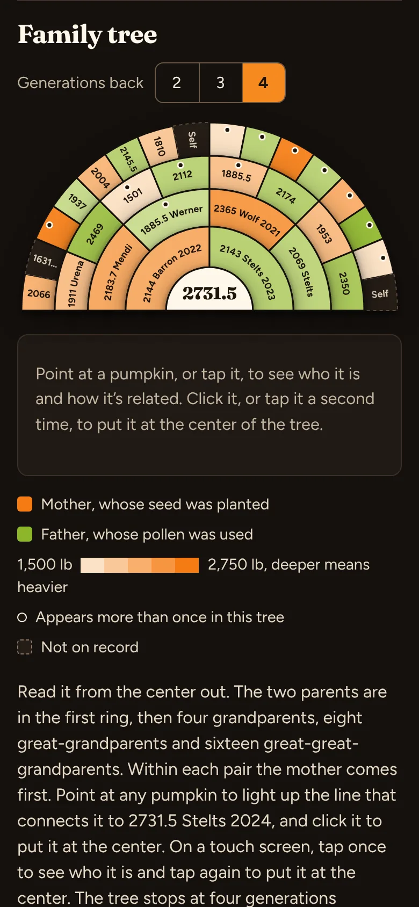

The Main Vine: family trees for giant pumpkins
Giant pumpkin growers choose their seeds by studying a plant's family history, the way horse breeders study bloodlines. The official results only list each pumpkin's parents as typed-in names. I linked every result since 2005 into family trees, then redesigned the site around a fan-shaped tree that fits up to five generations on one screen.
- Type
- Personal project, live
- Platform
- Web, desktop and phone
- My role
- Everything: data, design and front end
- Data
- 65,581 contest results, 2005 to 2026

Some background
Every fall, growers bring their biggest pumpkins to official contests called weigh-offs, and every result is published. A pumpkin is known by its weight, the grower's last name and the year, so "2365 Wolf 2021" is the 2,365-pound pumpkin a grower named Wolf grew in 2021.
Each result also lists two parents: the seed the pumpkin grew from, which is its mother, and the plant whose pollen was used, which is its father. Growers trade seeds from famous pumpkins and plan crosses years ahead, so a pumpkin's family is a big part of what its seeds are worth.
Why I redesigned it
The first version did its job. It linked the results and drew the trees. But it looked like a generic template: a big header band, cards inside boxes, orange links everywhere, and the family tree halfway down the page as a tall strip you had to scroll through. For a site about families, the tree should be the first thing you see, and it should look like something a grower would want to share.


I tried six visual directions in two rounds of mockups. The first three played it too safe. The second round pushed harder on type and color, and I picked the one I called Bloodlines: a dark look inspired by the record books horse breeders keep, built around the fan.
Key decisions
A fan instead of a standard tree
A standard family tree adds a column for every generation, so by the fifth one you're scrolling through a tall strip of cards. The fan puts the pumpkin in the middle and each generation in a ring around it. It shows four generations to start, up to five fit on one screen, and a pumpkin's two parents always sit right next to each other.

Color shows weight
Mothers are orange and fathers are green, and the heavier a pumpkin was, the deeper its color. You can see which side of a family produced the big ones without reading a single number, and the weights are there when you want them.
The trade-off: five generations, then recenter
A fan runs out of room faster than a list does, so it stops at five generations. To go further back, click any ancestor and the tree redraws with it in the middle. A Back button, or the browser's own back button, returns you to where you started. For anyone who'd rather read than click, the same tree is also available as a list.

Being honest about what the data doesn't know
Parents are typed in by hand, so some names fit more than one pumpkin. Those keep the name as it was typed, with a question mark, and in the tree they say "Not sure which." A parent that doesn't match any pumpkin gets a dashed slice that says "Not on record," and the page explains why it might be missing. The results name the seed the father plant grew from, not what that plant went on to grow, so when the site can work out the plant, it calls it a strong guess. An ancestor that appears more than once gets a dot, so a line that's been crossed back on itself is easy to spot.

On a phone
Phones show up to four generations, so the slices stay big enough to tap. The first tap on an ancestor shows who it is, and a second tap puts it in the middle.


How I worked
I set the direction and made the calls on every screen. AI tools drew the mockups and wrote most of the code from my direction, which let me try six directions in two days and test the tree against the real data from the start, including the messy names.
What's next
- A seed shop, where every seed links to its family tree, with Shopify handling checkout.
- Testing the fan with growers who've never seen it: can they find a pumpkin's grandparents without help?
Contest results are published by the Great Pumpkin Commonwealth.